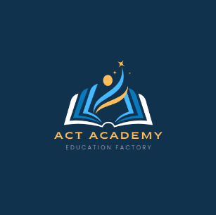
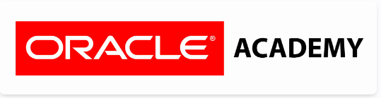

AN EXCITING OPPORTUNITY FOR MSC IN COMPUTER SCIENCE AND MBA PROGRAM APPLICANTS
American College of Technology (ACT) is a higher learning institution established
with a mission of producing internationally competent professionals in the field of
Management, Business Administration and Computer Science programs at graduate level. ACT is
fully accredited by the Ethiopian Higher Education Agency. The College aspires to be one of
the leading higher learning institutions in the region. ACT engages highly qualified and
experienced academic staff members from the US and local to make you highly competent in the industry.
ACT has already started registration for 2020/21 during normal working hours. Our programs are unique,
flexible and affordable. Don't miss it!!! If you are interested to get registered, please call or email
or visit us.
Develop Your Inner
Genius
As a student, you'll have the
opportunity to learn soft skill technique
to improve your learning ability and job
performance.
Recent News

Huawei ICT Academy in Ethiopia has signed a Memorandum of Understanding (MoU) with ACT
Huawei ICT Academy in Ethiopia has signed a Memorandum of Understanding (MoU) with the American College of Technology to jointly work as a partner in...
Read More
Posted 2022-08-04 09:07:09
Upcoming Events
Educational Seminar
on Entrepreneurialism (06 August 2022)
Maharishi International University (MIU)
Huawei ICT Academy has been designed to deliver industry-standard training and certification courses that are highly regarded by employers. As such, access to these courses will equip students with the latest ICT knowledge and practical skills, making them more employable and helping to kick start their careers.
Huawei ICT Academy
ACT collaborates with MIU to offer postgraduate programs in MBA and MSC in Computer Science. The preparation to offer PhD in management is also in the pipeline. MIU is a private University with its main campus located in Fairfield, Iowa, USA. The University is accredited through the PhD level by the Higher Learning Commission of the North Central Association of Colleges and Schools (www.ncacihe.org).

Oracle Academy
Oracle Academy is designed to provide students with foundational knowledge and skills in areas of computer science that are universally in high demand across computing jobs. ACT is an Approved member of Oracle Academy where ACT students can enjoy free courses. Get direct access to a wide variety of benefits. The rigorous process of becoming Oracle certified makes you a better technologist.
Coursera
Coursera Inc. is an American massive open online course provider founded in 2012 by Stanford University computer science professors Andrew Ng and Daphne Koller. Coursera works with universities and other organizations to offer online courses, certifications, and degrees in a variety of subjects.
Cisco Academy
Cisco Networking Academy transforms the lives of learners, educators and communities through the power of technology, education and career opportunities. A good fit for you if you enjoy a mix of detailed planning, implementation and business-related matters. Network Administrator, Network Designer, Network Engineer. Projected job growth.